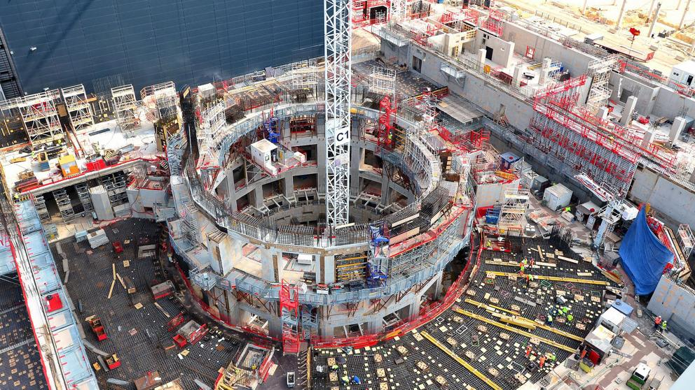

Energía de fusión: crear una reacción solar en un laboratorio. La energía limpia y renovable.
Fusión nuclear: la energía de las estrellas para el futuro.
En la ciencia ficción siempre hay un científico intenta crear una fuente de energía ilimitada para la humanidad, pero todo acaba saliendo mal. En este caso la realidad ha superado a la ficción
Hace unos días, China ha reportado que se ha llevado a cabo un ensayo exitoso recreando lo que han denominado como un “sol artificial”. Este término no es sino un reactor nuclear con una capacidad enorme capaz de generar energía ilimitada, igual que ocurre en la superficie del astro solar.
En este caso concreto se ha logrado obtener hasta cinco veces la temperatura del Sol durante un tiempo total de 17 minutos. Es decir, más de mil segundos a una temperatura de 70 millones de grados centígrados.
¿Qué es y cómo funciona un reactor de fusión?
La fusión nuclear trabaja según el principio de que la energía puede liberarse forzando la unión de los núcleos atómicos en lugar de dividirlos, como es el caso de las reacciones de la fisión nuclear que impulsan las centrales nucleares existentes.
Entonces, para lograr la fusión en un laboratorio los científicos idearon una solución en la que un gas sobrecalentado, o plasma, se mantiene dentro de un campo magnético en forma de donut. Este campo se produce en el interior del reactor para contener así el plasma a miles de grados.